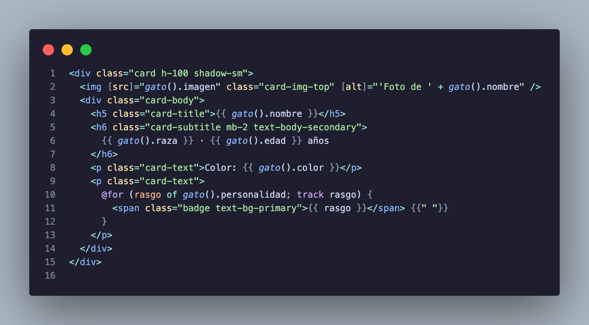
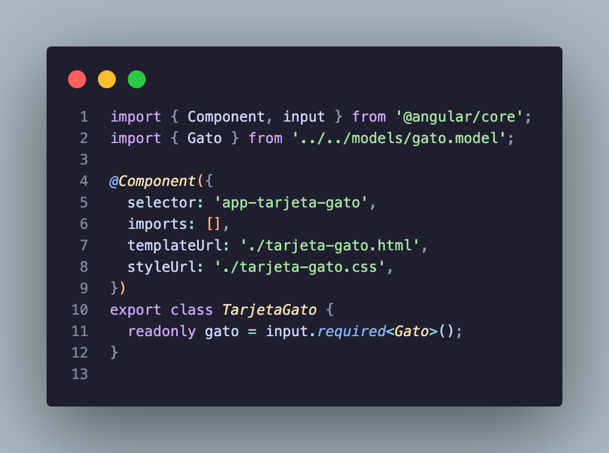
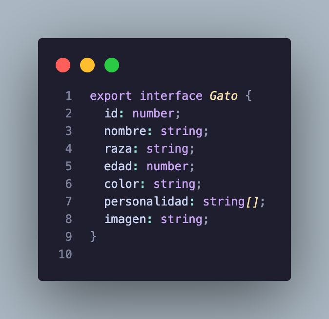
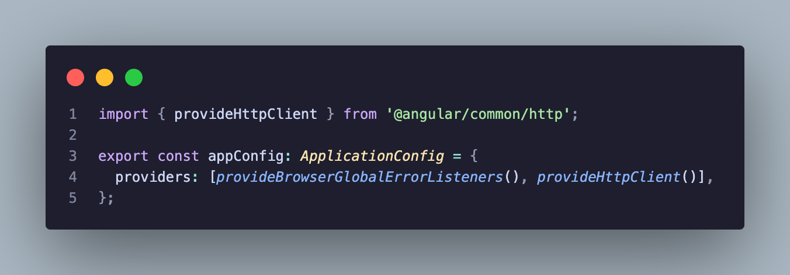
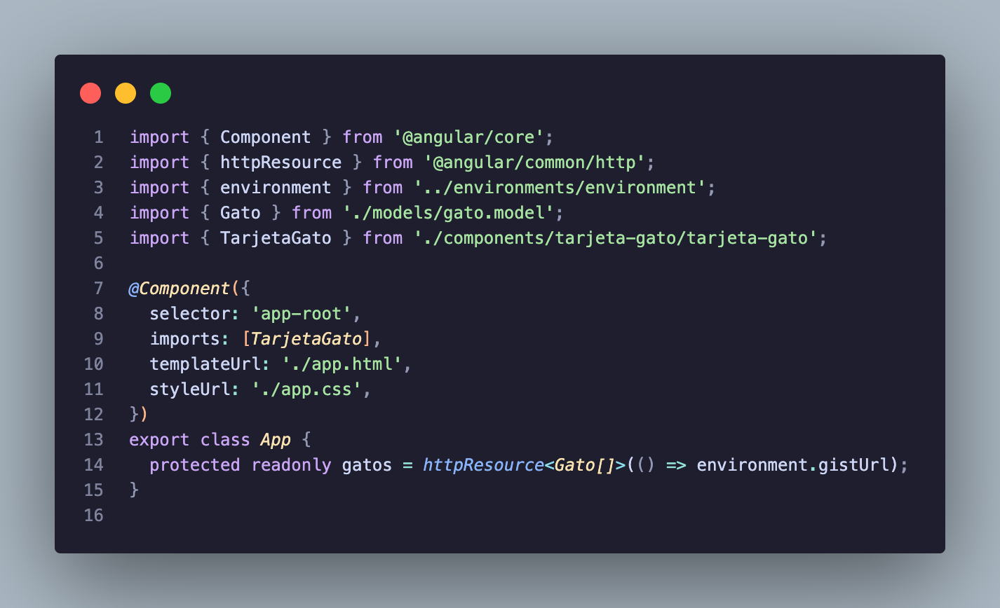
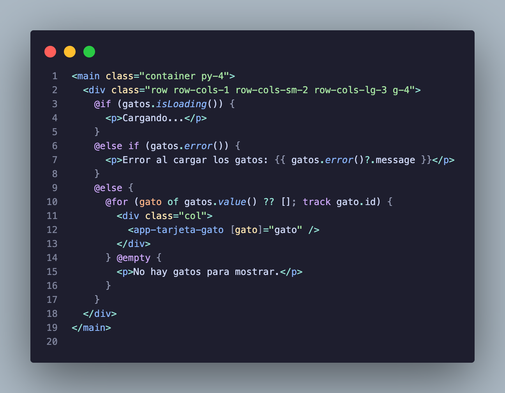

<!DOCTYPE html>
<html lang="en">
  <head>
    <meta charset="utf-8" />
    <meta name="viewport" content="width=device-width, initial-scale=1.0, maximum-scale=1.0, user-scalable=no" />

    <title></title>
    <link rel="stylesheet" href="dist/reveal.css" />
    <link rel="stylesheet" href="dist/theme/black.css" id="theme" />
    <link rel="stylesheet" href="plugin/highlight/monokai.css" />
	<link rel="stylesheet" href="css/layout.css" />
	<link rel="stylesheet" href="plugin/customcontrols/style.css">

	<link rel="stylesheet" href="plugin/reveal-pointer/pointer.css" />


    <script defer src="dist/fontawesome/all.min.js"></script>

	<script type="text/javascript">
		var forgetPop = true;
		function onPopState(event) {
			if(forgetPop){
				forgetPop = false;
			} else {
				parent.postMessage(event.target.location.href, "app://obsidian.md");
			}
        }
		window.onpopstate = onPopState;
		window.onmessage = event => {
			if(event.data == "reload"){
				window.document.location.reload();
			}
			forgetPop = true;
		}

		function fitElements(){
			const itemsToFit = document.getElementsByClassName('fitText');
			for (const item in itemsToFit) {
				if (Object.hasOwnProperty.call(itemsToFit, item)) {
					var element = itemsToFit[item];
					fitElement(element,1, 1000);
					element.classList.remove('fitText');
				}
			}
		}

		function fitElement(element, start, end){

			let size = (end + start) / 2;
			element.style.fontSize = `${size}px`;

			if(Math.abs(start - end) < 1){
				while(element.scrollHeight > element.offsetHeight){
					size--;
					element.style.fontSize = `${size}px`;
				}
				return;
			}

			if(element.scrollHeight > element.offsetHeight){
				fitElement(element, start, size);
			} else {
				fitElement(element, size, end);
			}		
		}


		document.onreadystatechange = () => {
			fitElements();
			if (document.readyState === 'complete') {
				if (window.location.href.indexOf("?export") != -1){
					parent.postMessage(event.target.location.href, "app://obsidian.md");
				}
				if (window.location.href.indexOf("print-pdf") != -1){
					let stateCheck = setInterval(() => {
						clearInterval(stateCheck);
						window.print();
					}, 250);
				}
			}
	};


        </script>
  </head>
  <body>
    <div class="reveal">
      <div class="slides"><section  data-markdown><script type="text/template"><!-- .slide: class="has-dark-background drop" data-background-color="#2E3440" -->
<div class="" style="position: absolute; left: 0px; top: 0px; height: 700px; width: 960px; min-height: 700px; display: flex; flex-direction: column; align-items: center; justify-content: center" absolute="true">

# Angular
</div></script></section><section  data-markdown><script type="text/template"><!-- .slide: class="has-dark-background drop" data-background-color="#2E3440" -->
<div class="" style="position: absolute; left: 0px; top: 0px; height: 700px; width: 960px; min-height: 700px; display: flex; flex-direction: column; align-items: center; justify-content: center" absolute="true">

## Agenda

- ¿Qué hemos hecho hasta ahora?
- ¿Qué es un framework?
- Angular como framework de frontend
- ¿Cómo instalamos dependencias externas?
- Arquitectura y elementos de Angular
- Descomposición y separación de responsabilidades
- Demo
- Práctica
- Tarea
</div></script></section><section  data-markdown><script type="text/template"><!-- .slide: class="has-dark-background drop" data-background-color="#2E3440" -->
<div class="" style="position: absolute; left: 0px; top: 0px; height: 700px; width: 960px; min-height: 700px; display: flex; flex-direction: column; align-items: center; justify-content: center" absolute="true">

## ¿Qué hemos hecho hasta ahora?

- Escribir HTML, CSS, JavaScript
- Usar TypeScript para generar JavaScript más "seguro"
- Modificar el DOM para agregar interacción a nuestras páginas

Pero...
- &shy;<!-- .element: class="fragment" data-fragment-index="1" -->¿Qué pasa si nuestra página crece?
</div></script></section><section  data-markdown><script type="text/template"><!-- .slide: class="has-dark-background drop" data-background-color="#2E3440" -->
<div class="" style="position: absolute; left: 0px; top: 0px; height: 700px; width: 960px; min-height: 700px; display: flex; flex-direction: column; align-items: center; justify-content: center" absolute="true">

## Típicamente...

- La página empieza con unos pocos elementos y eventos
- Se agregan nuevas vistas, datos y reglas de interacción
- El código que actualiza el DOM termina repartido entre varios archivos
- Entender qué cambia y cuándo cambia se vuelve más difícil
</div></script></section><section  data-markdown><script type="text/template"><!-- .slide: class="has-dark-background drop" data-background-color="#2E3440" -->
<div class="" style="position: absolute; left: 0px; top: 0px; height: 700px; width: 960px; min-height: 700px; display: flex; flex-direction: column; align-items: center; justify-content: center" absolute="true">

## ¿Qué es un framework?

- Es una base de trabajo con reglas, herramientas y convenciones
- Propone cómo organizar una aplicación a medida que crece
- Ofrece piezas reutilizables para resolver problemas frecuentes
- No elimina las decisiones de diseño, pero evita empezar desde cero
</div></script></section><section  data-markdown><script type="text/template"><!-- .slide: class="has-dark-background drop" data-background-color="#2E3440" -->
<div class="" style="position: absolute; left: 0px; top: 0px; height: 700px; width: 960px; min-height: 700px; display: flex; flex-direction: column; align-items: center; justify-content: center" absolute="true">

## Angular como framework de frontend

- Propone una estructura para la aplicación
- Define una forma de organizar el código
- Conecta datos, vistas y eventos
- Incluye herramientas para crear y ejecutar el proyecto fácilmente
- Nos ayuda a trabajar cuando la interfaz crece
</div></script></section><section  data-markdown><script type="text/template"><!-- .slide: class="has-dark-background drop" data-background-color="#2E3440" -->
<div class="" style="position: absolute; left: 0px; top: 0px; height: 700px; width: 960px; min-height: 700px; display: flex; flex-direction: column; align-items: center; justify-content: center" absolute="true">

### Angular y TypeScript

Angular utiliza TypeScript

<div style="font-size: 0.7em">

| Aspecto | TypeScript | Angular |
| --- | --- | --- |
| ¿Qué es? | Lenguaje de programación | Framework
| Aporta | Tipos y herramientas para escribir código | Estructura para construir la interfaz |
| Organiza | Variables, funciones y contratos | Componentes, vistas, eventos y servicios dentro de una aplicación web |

</div>
</div></script></section><section  data-markdown><script type="text/template"><!-- .slide: class="has-dark-background drop" data-background-color="#2E3440" -->
<div class="" style="position: absolute; left: 0px; top: 0px; height: 700px; width: 960px; min-height: 700px; display: flex; flex-direction: column; align-items: center; justify-content: center" absolute="true">

### ¿Por qué no mutar el DOM directamente?

- Funciona bien para páginas pequeñas
- Cada cambio debe coordinarse manualmente
- La lógica termina mezclada con la presentación
- Se repiten manipulaciones del DOM
- Hay más carga cognitiva como desarrollador
- **No hay una arquitectura definida**. ¿Esto a qué lleva?
</div></script></section><section  data-markdown><script type="text/template"><!-- .slide: class="has-dark-background drop" data-background-color="#2E3440" -->
<div class="" style="position: absolute; left: 0px; top: 0px; height: 700px; width: 960px; min-height: 700px; display: flex; flex-direction: column; align-items: center; justify-content: center" absolute="true">


</div></script></section><section  data-markdown><script type="text/template"><!-- .slide: class="has-dark-background drop" data-background-color="#2E3440" -->
<div class="" style="position: absolute; left: 0px; top: 0px; height: 700px; width: 960px; min-height: 700px; display: flex; flex-direction: column; align-items: center; justify-content: center" absolute="true">

### Angular propone una arquitectura definida
</div></script></section><section  data-markdown><script type="text/template"><!-- .slide: class="has-dark-background drop" data-background-color="#2E3440" -->
<div class="" style="position: absolute; left: 0px; top: 0px; height: 700px; width: 960px; min-height: 700px; display: flex; flex-direction: column; align-items: center; justify-content: center" absolute="true">

<div style="width: 100%; margin-left: -10%; transform: scale(1.15); transform-origin: center;">


<div class="mermaid">
flowchart LR
    U[Usuario] --> A

    subgraph Angular ["Angular (frontend)"]
        A["Vista (template y estilos)"] --> B[Componente]
        B --> C[Servicio]
    end

    subgraph External ["Backend"]
        D[API]
    end

    C --> D

</div>


</div>

La vamos a revisar más adelante a detalle
</div></script></section><section  data-markdown><script type="text/template"><!-- .slide: class="has-dark-background drop" data-background-color="#2E3440" -->
<div class="" style="position: absolute; left: 0px; top: 0px; height: 700px; width: 960px; min-height: 700px; display: flex; flex-direction: column; align-items: center; justify-content: center" absolute="true">

## ¿Cómo instalamos dependencias externas (en nuestro caso Angular)?
</div></script></section><section  data-markdown><script type="text/template"><!-- .slide: class="has-dark-background drop" data-background-color="#2E3440" -->
<div class="" style="position: absolute; left: 0px; top: 0px; height: 700px; width: 960px; min-height: 700px; display: flex; flex-direction: column; align-items: center; justify-content: center" absolute="true">

### Gestores de paquetes

- Instalan librerías y herramientas que el proyecto necesita
- Registran las versiones para que el equipo use las mismas dependencias
- Ejecutan comandos definidos por el proyecto
- Evitan descargar y configurar cada dependencia manualmente
</div></script></section><section  data-markdown><script type="text/template"><!-- .slide: class="has-dark-background drop" data-background-color="#2E3440" -->
<div class="" style="position: absolute; left: 0px; top: 0px; height: 700px; width: 960px; min-height: 700px; display: flex; flex-direction: column; align-items: center; justify-content: center" absolute="true">

#### Para JavaScript y TypeScript: npm

- Node Package Manager (npm)
- Instala dependencias del proyecto
- Permite compartir herramientas y librerías
</div></script></section><section  data-markdown><script type="text/template"><!-- .slide: class="has-dark-background drop" data-background-color="#2E3440" -->
<div class="" style="position: absolute; left: 0px; top: 0px; height: 700px; width: 960px; min-height: 700px; display: flex; flex-direction: column; align-items: center; justify-content: center" absolute="true">

## Un proyecto npm

- `package.json`: describe el proyecto
- `package-lock.json`: fija las versiones instaladas
- `node_modules`: contiene las dependencias
- `npm install`: instala paquetes
- `npm run <comando>`: ejecuta scripts
</div></script></section><section  data-markdown><script type="text/template"><!-- .slide: class="has-dark-background drop" data-background-color="#2E3440" -->
<div class="" style="position: absolute; left: 0px; top: 0px; height: 700px; width: 960px; min-height: 700px; display: flex; flex-direction: column; align-items: center; justify-content: center" absolute="true">

## ¿Cómo empezamos a usar Angular?

```sh
npm i -g @angular/cli
```
</div></script></section><section  data-markdown><script type="text/template"><!-- .slide: class="has-dark-background drop" data-background-color="#2E3440" -->
<div class="" style="position: absolute; left: 0px; top: 0px; height: 700px; width: 960px; min-height: 700px; display: flex; flex-direction: column; align-items: center; justify-content: center" absolute="true">

## Angular CLI

- `ng new`: crea una aplicación
- `ng generate <elemento>`: crea componentes y servicios
- `ng serve`: inicia el servidor de desarrollo
- `ng build`: prepara la aplicación para publicar
</div></script></section><section  data-markdown><script type="text/template"><!-- .slide: class="has-dark-background drop" data-background-color="#2E3440" -->
<div class="" style="position: absolute; left: 0px; top: 0px; height: 700px; width: 960px; min-height: 700px; display: flex; flex-direction: column; align-items: center; justify-content: center" absolute="true">

## Veamos un ejemplo

En VSCode
</div></script></section><section  data-markdown><script type="text/template"><!-- .slide: class="has-dark-background drop" data-background-color="#2E3440" -->
<div class="" style="position: absolute; left: 0px; top: 0px; height: 700px; width: 960px; min-height: 700px; display: flex; flex-direction: column; align-items: center; justify-content: center" absolute="true">

## Arquitectura y elementos de Angular
</div></script></section><section  data-markdown><script type="text/template"><!-- .slide: class="has-dark-background drop" data-background-color="#2E3440" -->
<div class="" style="position: absolute; left: 0px; top: 0px; height: 700px; width: 960px; min-height: 700px; display: flex; flex-direction: column; align-items: center; justify-content: center" absolute="true">

### Recordemos la arquitectura

<div style="width: 100%; margin-left: -10%; transform: scale(1.15); transform-origin: center;">


<div class="mermaid">
flowchart LR
    U[Usuario] --> A

    subgraph Angular ["Angular (frontend)"]
        A["Vista (template y estilos)"] --> B[Componente]
        B --> C[Servicio]
    end

    subgraph External ["Backend"]
        D[API]
    end

    C --> D

</div>


</div>
</div></script></section><section  data-markdown><script type="text/template"><!-- .slide: class="has-dark-background drop" data-background-color="#2E3440" -->
<div class="" style="position: absolute; left: 0px; top: 0px; height: 700px; width: 960px; min-height: 700px; display: flex; flex-direction: column; align-items: center; justify-content: center" absolute="true">

## Vista
</div></script></section><section  data-markdown><script type="text/template"><!-- .slide: class="has-dark-background drop" data-background-color="#2E3440" -->
<div class="" style="position: absolute; left: 0px; top: 0px; height: 700px; width: 960px; min-height: 700px; display: flex; flex-direction: column; align-items: center; justify-content: center" absolute="true">

### La vista (template)

#### Qué hace:

- Muestra datos
- Emite eventos hacia el componente
- Controla qué se ve según el estado

#### Qué no hace:

- Peticiones HTTP
- Buscar elementos con `querySelector`
- Decidir cómo obtener o transformar los datos
</div></script></section><section  data-markdown><script type="text/template"><!-- .slide: class="has-dark-background drop" data-background-color="#2E3440" -->
<div class="" style="position: absolute; left: 0px; top: 0px; height: 700px; width: 960px; min-height: 700px; display: flex; flex-direction: column; align-items: center; justify-content: center" absolute="true">

### La vista (estilos)

- Define la apariencia del componente: colores, tamaños, espaciado y distribución
- Puede aplicar estilos solo dentro del componente
- No obtiene datos ni decide qué debe mostrar la vista
- Mantiene la presentación separada de la lógica
</div></script></section><section  data-markdown><script type="text/template"><!-- .slide: class="has-dark-background drop" data-background-color="#2E3440" -->
<div class="" style="position: absolute; left: 0px; top: 0px; height: 700px; width: 960px; min-height: 700px; display: flex; flex-direction: column; align-items: center; justify-content: center" absolute="true">

### Template de Angular

<div style="font-size: 0.5em">

| Sintaxis | ¿Qué hace? | Ejemplo |
| --- | --- | --- |
| Interpolación | Muestra un valor en el HTML | `<p>{{ dato() }}</p>` |
| Propiedades | Asigna un valor a una propiedad del elemento | `` |
| Eventos | Responde a una acción del usuario | `<button (click)="recargar()">Recargar</button>` |
| Condiciones | Muestra contenido solo si se cumple una condición | `@if (loading()) { <p>Cargando...</p> } @else if (error()) {<p>Intenta nuevamente</p>}  @else {…}` |
| Repeticiones | Repite contenido para cada elemento de una colección | `@for (pelicula of peliculas(); track pelicula.id) { <li>{{ pelicula.titulo }}</li> }` |

</div>
</div></script></section><section  data-markdown><script type="text/template"><!-- .slide: class="has-dark-background drop" data-background-color="#2E3440" -->
<div class="" style="position: absolute; left: 0px; top: 0px; height: 700px; width: 960px; min-height: 700px; display: flex; flex-direction: column; align-items: center; justify-content: center" absolute="true">

### Ejemplo `tarjeta-gato.html`


</div></script></section><section  data-markdown><script type="text/template"><!-- .slide: class="has-dark-background drop" data-background-color="#2E3440" -->
<div class="" style="position: absolute; left: 0px; top: 0px; height: 700px; width: 960px; min-height: 700px; display: flex; flex-direction: column; align-items: center; justify-content: center" absolute="true">

## Componente
</div></script></section><section  data-markdown><script type="text/template"><!-- .slide: class="has-dark-background drop" data-background-color="#2E3440" -->
<div class="" style="position: absolute; left: 0px; top: 0px; height: 700px; width: 960px; min-height: 700px; display: flex; flex-direction: column; align-items: center; justify-content: center" absolute="true">

<div style="font-size: 0.75em">

## El componente

#### Qué hace:

- Decide qué debe cargar la vista
- Asocia el template y los estilos del componente
- Mantiene el estado propio de la vista
- Responde a eventos del template
- Llama a la capa de servicio
- Puede leer variables


#### Qué no hace:

- Escribir el HTML de cada elemento a mano
- Hacer directamente las peticiones HTTP
- Conocer las URLs y detalles del API
- Definir los estilos visuales detallados
- Manipular el DOM con `querySelector`
- Persistir datos en el backend

</div>
</div></script></section><section  data-markdown><script type="text/template"><!-- .slide: class="has-dark-background drop" data-background-color="#2E3440" -->
<div class="" style="position: absolute; left: 0px; top: 0px; height: 700px; width: 960px; min-height: 700px; display: flex; flex-direction: column; align-items: center; justify-content: center" absolute="true">

### Ejemplo `tarjeta-gato.ts`


</div></script></section><section  data-markdown><script type="text/template"><!-- .slide: class="has-dark-background drop" data-background-color="#2E3440" -->
<div class="" style="position: absolute; left: 0px; top: 0px; height: 700px; width: 960px; min-height: 700px; display: flex; flex-direction: column; align-items: center; justify-content: center" absolute="true">

En la anterior imagen, ¿qué creen que es `Gato`?
</div></script></section><section  data-markdown><script type="text/template"><!-- .slide: class="has-dark-background drop" data-background-color="#2E3440" -->
<div class="" style="position: absolute; left: 0px; top: 0px; height: 700px; width: 960px; min-height: 700px; display: flex; flex-direction: column; align-items: center; justify-content: center" absolute="true">

### ¡La interfaz!

En Angular lo llamaremos `Modelo`


</div></script></section><section  data-markdown><script type="text/template"><!-- .slide: class="has-dark-background drop" data-background-color="#2E3440" -->
<div class="" style="position: absolute; left: 0px; top: 0px; height: 700px; width: 960px; min-height: 700px; display: flex; flex-direction: column; align-items: center; justify-content: center" absolute="true">

## Servicio
</div></script></section><section  data-markdown><script type="text/template"><!-- .slide: class="has-dark-background drop" data-background-color="#2E3440" -->
<div class="" style="position: absolute; left: 0px; top: 0px; height: 700px; width: 960px; min-height: 700px; display: flex; flex-direction: column; align-items: center; justify-content: center" absolute="true">

## El servicio

- Se encarga de hablar con el API
- Conoce las URLs y las peticiones HTTP
- Expone datos y estados a la vista
- Puede transformar las respuestas
- Puede reutilizarse desde varios componentes
</div></script></section><section  data-markdown><script type="text/template"><!-- .slide: class="has-dark-background drop" data-background-color="#2E3440" -->
<div class="" style="position: absolute; left: 0px; top: 0px; height: 700px; width: 960px; min-height: 700px; display: flex; flex-direction: column; align-items: center; justify-content: center" absolute="true">

### Por el momento, el servicio no lo implementaremos nosotros

- Desde Angular 19.2 existe `httpResource`
- Permite hacer una solicitud de lectura a una URL
- Expone métodos listos para usar como `isLoading()`, `error()` y `value()`
- Solo permite hacer lectura. Para operaciones de creación, edición o eliminación se necesita usar `HTTPClient`. Lo veremos más adelante en el curso
</div></script></section><section  data-markdown><script type="text/template"><!-- .slide: class="has-dark-background drop" data-background-color="#2E3440" -->
<div class="" style="position: absolute; left: 0px; top: 0px; height: 700px; width: 960px; min-height: 700px; display: flex; flex-direction: column; align-items: center; justify-content: center" absolute="true">

### Para poder usar `httpResource`

En `src/app/app.config.ts` añadimos `provideHttpClient`:


</div></script></section><section  data-markdown><script type="text/template"><!-- .slide: class="has-dark-background drop" data-background-color="#2E3440" -->
<div class="" style="position: absolute; left: 0px; top: 0px; height: 700px; width: 960px; min-height: 700px; display: flex; flex-direction: column; align-items: center; justify-content: center" absolute="true">

### Para poder usar `httpResource`

Dentro de un componente:


</div></script></section><section  data-markdown><script type="text/template"><!-- .slide: class="has-dark-background drop" data-background-color="#2E3440" -->
<div class="" style="position: absolute; left: 0px; top: 0px; height: 700px; width: 960px; min-height: 700px; display: flex; flex-direction: column; align-items: center; justify-content: center" absolute="true">

### Para poder usar `httpResource`

Y en el template del componente:


</div></script></section><section  data-markdown><script type="text/template"><!-- .slide: class="has-dark-background drop" data-background-color="#2E3440" -->
<div class="" style="position: absolute; left: 0px; top: 0px; height: 700px; width: 960px; min-height: 700px; display: flex; flex-direction: column; align-items: center; justify-content: center" absolute="true">

## API
</div></script></section><section  data-markdown><script type="text/template"><!-- .slide: class="has-dark-background drop" data-background-color="#2E3440" -->
<div class="" style="position: absolute; left: 0px; top: 0px; height: 700px; width: 960px; min-height: 700px; display: flex; flex-direction: column; align-items: center; justify-content: center" absolute="true">

## La API

- Por el momento no tenemos una, solo hemos simulado (mockeado) una con GISTs
- Vive por fuera del proyecto Angular
- Hace parte del backend
- Persiste y devuelve los datos
- Define sus propias rutas y respuestas
- Puede devolver errores
</div></script></section><section  data-markdown><script type="text/template"><!-- .slide: class="has-dark-background drop" data-background-color="#2E3440" -->
<div class="" style="position: absolute; left: 0px; top: 0px; height: 700px; width: 960px; min-height: 700px; display: flex; flex-direction: column; align-items: center; justify-content: center" absolute="true">

## Ejemplo

API de [Star Wars](https://swapi.dev/)
</div></script></section><section  data-markdown><script type="text/template"><!-- .slide: class="has-dark-background drop" data-background-color="#2E3440" -->
<div class="" style="position: absolute; left: 0px; top: 0px; height: 700px; width: 960px; min-height: 700px; display: flex; flex-direction: column; align-items: center; justify-content: center" absolute="true">

## Descomposición y separación de responsabilidades
</div></script></section><section  data-markdown><script type="text/template"><!-- .slide: class="has-dark-background drop" data-background-color="#2E3440" -->
<div class="" style="position: absolute; left: 0px; top: 0px; height: 700px; width: 960px; min-height: 700px; display: flex; flex-direction: column; align-items: center; justify-content: center" absolute="true">

## Descomposición y separación de responsabilidades


- Dividir por responsabilidades
- &shy;<!-- .element: class="fragment" data-fragment-index="1" -->Evita que una clase haga todo
- &shy;<!-- .element: class="fragment" data-fragment-index="2" -->Crear piezas que puedan reutilizarse
- &shy;<!-- .element: class="fragment" data-fragment-index="3" -->Facilitar cambios y pruebas
> Cada pieza debe tener una razón clara para cambiar.
</div></script></section><section  data-markdown><script type="text/template"><!-- .slide: class="has-dark-background drop" data-background-color="#2E3440" -->
<div class="" style="position: absolute; left: 0px; top: 0px; height: 700px; width: 960px; min-height: 700px; display: flex; flex-direction: column; align-items: center; justify-content: center" absolute="true">

### ¿Qué pasa si cambia la API?

- La capa de datos adapta la petición
- La API sigue siendo una frontera externa
</div></script></section><section  data-markdown><script type="text/template"><!-- .slide: class="has-dark-background drop" data-background-color="#2E3440" -->
<div class="" style="position: absolute; left: 0px; top: 0px; height: 700px; width: 960px; min-height: 700px; display: flex; flex-direction: column; align-items: center; justify-content: center" absolute="true">

## Resumen

- Angular es un framework de frontend
- npm administra las dependencias del proyecto
- El template muestra datos y emite eventos
- El componente coordina la vista
- El servicio se comunica con el API
- La API vive por fuera del proyecto Angular
- Descomponer ayuda a mantener el sistema
</div></script></section><section  data-markdown><script type="text/template"><!-- .slide: class="has-dark-background drop" data-background-color="#2E3440" -->
<div class="" style="position: absolute; left: 0px; top: 0px; height: 700px; width: 960px; min-height: 700px; display: flex; flex-direction: column; align-items: center; justify-content: center" absolute="true">

## ¿Preguntas?
</div></script></section><section  data-markdown><script type="text/template"><!-- .slide: class="has-dark-background drop" data-background-color="#2E3440" -->
<div class="" style="position: absolute; left: 0px; top: 0px; height: 700px; width: 960px; min-height: 700px; display: flex; flex-direction: column; align-items: center; justify-content: center" absolute="true">

## Práctica

- Deben definir los modelos de sus 3 entidades en su repositorio individual
</div></script></section><section  data-markdown><script type="text/template"><!-- .slide: class="has-dark-background drop" data-background-color="#2E3440" -->
<div class="" style="position: absolute; left: 0px; top: 0px; height: 700px; width: 960px; min-height: 700px; display: flex; flex-direction: column; align-items: center; justify-content: center" absolute="true">

## Instalar Angular CLI
```sh
npm i -g @angular/cli
```
</div></script></section><section  data-markdown><script type="text/template"><!-- .slide: class="has-dark-background drop" data-background-color="#2E3440" -->
<div class="" style="position: absolute; left: 0px; top: 0px; height: 700px; width: 960px; min-height: 700px; display: flex; flex-direction: column; align-items: center; justify-content: center" absolute="true">

## Crear un proyecto de Angular dentro de su repositorio individual
```sh
ng new <nombre_proyecto> \
--style=css --routing=false --ssr=false
```
</div></script></section><section  data-markdown><script type="text/template"><!-- .slide: class="has-dark-background drop" data-background-color="#2E3440" -->
<div class="" style="position: absolute; left: 0px; top: 0px; height: 700px; width: 960px; min-height: 700px; display: flex; flex-direction: column; align-items: center; justify-content: center" absolute="true">

## Crear los environments
```sh
ng generate environments
```

```ts
// src/environments/environment.development.ts
export const environment = {
	production: false,
	gistUrl: 'https://gist.githubusercontent.com/...',
};
```
```ts
// src/environments/environment.ts
export const environment = {
	production: true,
	gistUrl: 'https://gist.githubusercontent.com/...',
};
```
</div></script></section><section  data-markdown><script type="text/template"><!-- .slide: class="has-dark-background drop" data-background-color="#2E3440" -->
<div class="" style="position: absolute; left: 0px; top: 0px; height: 700px; width: 960px; min-height: 700px; display: flex; flex-direction: column; align-items: center; justify-content: center" absolute="true">

## Instalar Bootstrap
```sh
npm install bootstrap
```
Luego agregar el CSS en `angular.json
(`projects.nombre_proyecto.
architect.build.options.styles`):
```json
"styles": [
"node_modules/bootstrap/dist/css/bootstrap.min.css",
"src/styles.css"]
```
</div></script></section><section  data-markdown><script type="text/template"><!-- .slide: class="has-dark-background drop" data-background-color="#2E3440" -->
<div class="" style="position: absolute; left: 0px; top: 0px; height: 700px; width: 960px; min-height: 700px; display: flex; flex-direction: column; align-items: center; justify-content: center" absolute="true">

## Crear la interfaz (modelos)
```sh
ng generate interface models/entidad1 --type=model
ng generate interface models/entidad2 --type=model
ng generate interface models/entidad3 --type=model
```

Y deberán llenar cada uno de los archivos generados
</div></script></section><section  data-markdown><script type="text/template"><!-- .slide: class="has-dark-background drop" data-background-color="#2E3440" -->
<div class="" style="position: absolute; left: 0px; top: 0px; height: 700px; width: 960px; min-height: 700px; display: flex; flex-direction: column; align-items: center; justify-content: center" absolute="true">

Una vez hagan eso, sigan el tutorial desde [este paso](https://recursos-isis-2211.virtual.uniandes.edu.co/talleres/crear-componente-listar/#4-incluir-httpclient) pero para sus entidades
</div></script></section><section  data-markdown><script type="text/template"><!-- .slide: class="has-dark-background drop" data-background-color="#2E3440" -->
<div class="" style="position: absolute; left: 0px; top: 0px; height: 700px; width: 960px; min-height: 700px; display: flex; flex-direction: column; align-items: center; justify-content: center" absolute="true">

## Tarea

Hacer el Release 1
</div></script></section></div>
    </div>

    <script src="dist/reveal.js"></script>

    <script src="plugin/markdown/markdown.js"></script>
    <script src="plugin/highlight/highlight.js"></script>
    <script src="plugin/zoom/zoom.js"></script>
    <script src="plugin/notes/notes.js"></script>
    <script src="plugin/math/math.js"></script>
	<script src="plugin/mermaid/mermaid.js"></script>
	<script src="plugin/chart/chart.min.js"></script>
	<script src="plugin/chart/plugin.js"></script>
	<script src="plugin/customcontrols/plugin.js"></script>
	<script src="plugin/reveal-pointer/pointer.js"></script>

    <script>
      function extend() {
        var target = {};
        for (var i = 0; i < arguments.length; i++) {
          var source = arguments[i];
          for (var key in source) {
            if (source.hasOwnProperty(key)) {
              target[key] = source[key];
            }
          }
        }
        return target;
      }

	  function isLight(color) {
		let hex = color.replace('#', '');

		// convert #fff => #ffffff
		if(hex.length == 3){
			hex = `${hex[0]}${hex[0]}${hex[1]}${hex[1]}${hex[2]}${hex[2]}`;
		}

		const c_r = parseInt(hex.substr(0, 2), 16);
		const c_g = parseInt(hex.substr(2, 2), 16);
		const c_b = parseInt(hex.substr(4, 2), 16);
		const brightness = ((c_r * 299) + (c_g * 587) + (c_b * 114)) / 1000;
		return brightness > 155;
	}

	var bgColor = getComputedStyle(document.documentElement).getPropertyValue('--r-background-color').trim();
	var isLight = isLight(bgColor);

	if(isLight){
		document.body.classList.add('has-light-background');
	} else {
		document.body.classList.add('has-dark-background');
	}

      // default options to init reveal.js
      var defaultOptions = {
        controls: true,
        progress: true,
        history: true,
        center: true,
        transition: 'default', // none/fade/slide/convex/concave/zoom
        plugins: [
          RevealMarkdown,
          RevealHighlight,
          RevealZoom,
          RevealNotes,
          RevealMath.MathJax3,
		  RevealMermaid,
		  RevealChart,
		  RevealCustomControls,
	      RevealPointer,
        ],


    	allottedTime: 120 * 1000,

		mathjax3: {
			mathjax: 'plugin/math/mathjax/tex-mml-chtml.js',
		},
		markdown: {
		  gfm: true,
		  mangle: true,
		  pedantic: false,
		  smartLists: false,
		  smartypants: false,
		},

		mermaid: {
			theme: isLight ? 'default' : 'dark',
		},

		customcontrols: {
			controls: [
			]
		},
      };

      // options from URL query string
      var queryOptions = Reveal().getQueryHash() || {};

      var options = extend(defaultOptions, {"width":960,"height":700,"margin":0.04,"controls":true,"progress":true,"slideNumber":false,"transition":"slide","transitionSpeed":"default"}, queryOptions);
    </script>

    <script>
      Reveal.initialize(options);
    </script>
  </body>

  <!-- created with Advanced Slides -->
</html>
